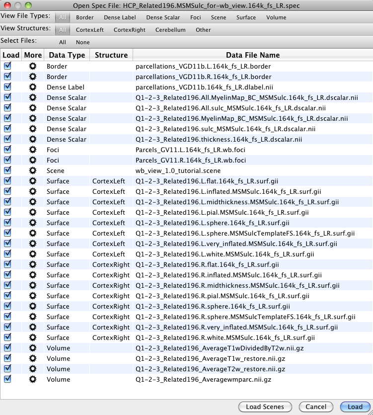

Open Spec File Dialog
The Open Spec File Dialog lists all the files
contained in the Specification
file, organized by file type.
- The tabs in the View File Types:
and View Structures: bars at the top of the dialog
allow the user to view a subset of the data files by clicking
on a specific file or structure type.
- Checkboxes on the left indicate which
files will be loaded once the Load button, in the
lower right, is pressed. All files are selected by default.
Toggle off a checkbox to keep those files from being
loaded. To check or uncheck all the files, click All
or None in the Select Files: bar near the top
of the dialog.
- The Data Type, Structure,
and Data File Name headers can also be clicked to sort
the list of files by these attributes.
- The More
gear buttons to the right of each checkbox will, once
implemented, allow the user to select options to Set the
Structure for a file (e.g. Cerebellum, Cortex Left,
etc.) or to View Metadata associated with the file.
Clicking on these buttons now, will display these
options as greyed out, indicating that this feature is not yet
implemented.
